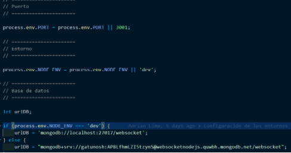
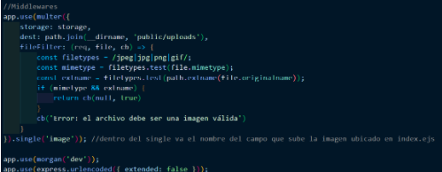
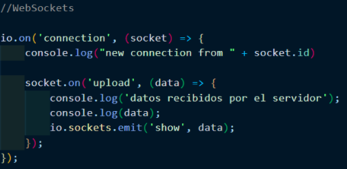
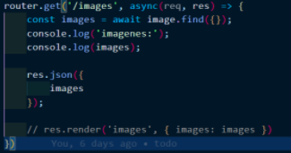
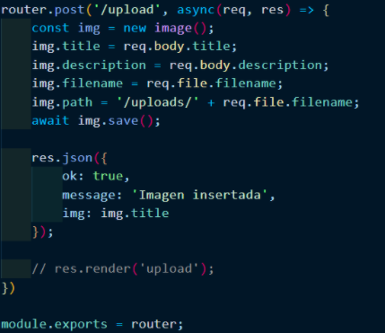

Webhooks
14 de Enero de 2021
Un webhook (o WebHook), en desarrollo web, es un método de alteración del funcionamiento de una página o aplicación web, con callbacks personalizados. Estos se pueden mantener, modificar y gestionar por terceros; desarrolladores que no tienen por qué estar afiliados a la web o aplicación. El término "webhook" fue inventado por Jeff Lindsay en 2007, a partir del término de programación Hook.
Los webhooks son retrollamadas HTTP de usuario. Estos se registran en algunas ocasiones, como al publicar un comentario en un blog. Cuando esto ocurre, la web envía una solicitud HTTP a la URL configurada para el webhook. Los usuarios pueden configurarlos para que la web se comporte de una forma u otra. Como usan HTTP, pueden integrarse en servicios web sin añadir una nueva infraestructura.
Añadir Websockets a un servidor NodeJS
- Se inicia un proyecto en NodeJS usando el comando “npm init -y”
- Se instalaron los módulos “morgan” “express” “mongoose” “nodemon” “socket.io” y “multer” con npm i --save junto con los nombres de los modulos mencionados
- Crear una carpeta "src" para almacenar el codigo que utilizara el servidor
- Crear un archivo “index.js” en el cual irá todo lo del servidor.
-
Configurar los puertos y conexiones a la base de datos que se
utlizara para el proyecto

-
En este caso se creo un un middleware usando el módulo multer para
poder subir imágenes al servidor al entrar en la ruta /upload

- Se usa el módulo socket.io para que con el método “io.on()” detecte cuando alguien se conecta. Este nos permitira controlar la accion del Websocket
-
Dentro de “io.on()” ponemos un método llamado “socket.on()” en el
cual recibiremos datos de un cliente y con ayuda del método
“io.sockets.emit()” reenviamos esos datos a todos los demás usuarios
menos al emisor.

-
Luego se crean rutas con express para obtener la informacion que
ofrece el servidor

- Hacer la peticion a las rutas creadas y ver como funciona el websocket creado. En este ejemplo si uno ve la ruta en images podra ver como el servidor muestra imagenes cuando estas se van agregando a la base de datos
Añadir websocket a una aplicación movil en Android
- En el archivo de build.gradle añadir las dependecia 'org.java-websocket:Java-WebSocket:1.1.1'
- Luego de importar la dependencia hay que dirigirse al archivo donde se va a aplicar la conexion al WebSocket
- En este inicializar una variable URI la cual se le guarda la dirección del websocket del servidor y luego iniciar un objeto WebSocketClient pasando la URI iniciada
- Dentro del WebScoketClient se inicializan los metodos necesarios para que este funcione los cuales son onMessage y onOpen
- El metodo onMessage nos permitira poner el codigo de lo que queremos que muestre o haga la aplicacion cuando recibe información del servidor.